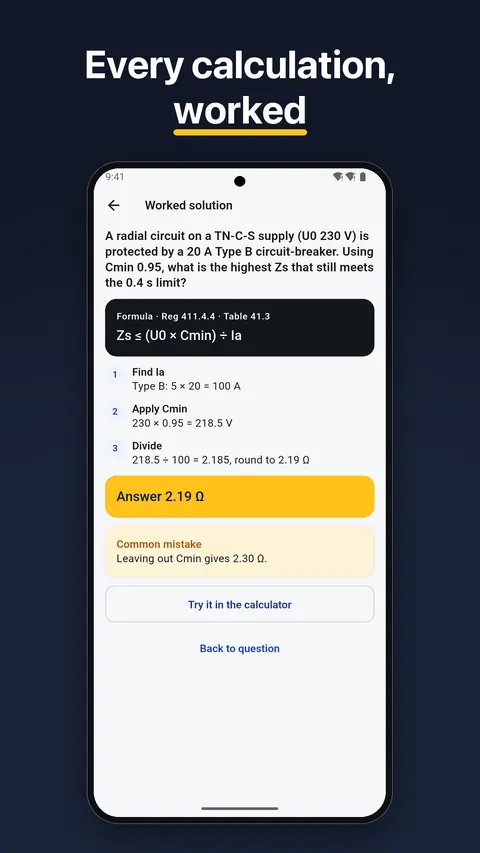

Not a government app. Sparkwise is an independent study app made by Kodfu Bilisim. It is not affiliated with or endorsed by the IET, BSI, City & Guilds, EAL, NET, the ECS, the JIB, NICEIC, NAPIT, MCS, HSE or OZEV. It does not contain the real exam questions and never reproduces BS 7671 text.
Sites, farms, caravans, marinas and events: free 18th Edition practice questions
Sections 704 to 740: construction sites, farms, restricted conductive locations, caravan parks and caravans, marinas, exhibitions, fairgrounds, outdoor and ELV lighting, mobile units and gangways.
10 original questions from the Sparkwise app, each with the answer and an explanation. Open book: have your copy of BS 7671:2018+A4:2026 ready and look each answer up, as you would in the exam. No sign-up, nothing saved. These are not the real exam questions: no app or website can show you those.
Question 1 · Choose one answer
On a construction site, what is the voltage to earth of a 110 V single-phase reduced low voltage supply?
- 25 V
- 55 V
- 63.5 V
- 110 V
Show the answer
Answer B: 55 V
The 110 V secondary is centre-tapped to earth, so each line is only 55 V to earth, reducing the shock risk.
Where to look: Reg 704.410.3.10 · Reg 411.8
Question 2 · Choose one answer
Which standard covers assemblies (distribution boards) for use on construction sites?
- BS EN 61439-3
- BS EN 61439-4
- BS EN 60898-1
- BS 1363
Show the answer
Answer B: BS EN 61439-4
Construction site assemblies (ACS) are to BS EN 61439-4. Part 3 covers distribution boards for ordinary persons.
Where to look: Reg 704.511.1
Question 3 · Choose one answer
What minimum IP rating is required for electrical equipment in agricultural premises in normal conditions?
- IP2X
- IP33
- IP44
- IP68
Show the answer
Answer C: IP44
Agricultural equipment must be at least IP44 because of dust, damp and cleaning.
Where to look: Reg 705.512.2
Question 4 · Choose one answer
In a conducting location with restricted movement, electrical separation may supply hand-held tools if:
- Several tools share one winding
- Only one item per secondary winding
- The transformer sits inside the tank
- The supply voltage is 400 V
Show the answer
Answer B: Only one item per secondary winding
Electrical separation is only allowed with one item per secondary winding, so a second fault cannot create a shock path.
Where to look: Reg 706.410.3.10
Question 5 · Choose one answer
What minimum IP rating is required for caravan pitch supply equipment?
- IP2X
- IP33
- IP44
- IPX7
Show the answer
Answer C: IP44
Pitch supply equipment stands outdoors in rain and splashing water, so Section 708 asks for at least IP44: protected against objects over 1 mm and against water splashed from any direction.
Where to look: Reg 708.512.2.1
Question 6 · Choose one answer
How must each marina socket-outlet be protected?
- A 300 mA RCD shared by the whole pontoon
- Its own 30 mA RCD and overcurrent device
- An AFDD plus one shared 30 mA RCD
- A SELV supply from a shore transformer
Show the answer
Answer B: Its own 30 mA RCD and overcurrent device
Marina sockets have individual 30 mA RCDs disconnecting all poles including neutral, plus individual overcurrent protection.
Where to look: Reg 709.531.2 · Reg 709.533
Question 7 · Choose one answer
When must the temporary installation of a fairground ride be inspected and tested?
- Once a year by the operator
- After each assembly on site
- Only when first manufactured
- Every five years at most
Show the answer
Answer B: After each assembly on site
Temporary installations at fairgrounds and exhibitions are inspected and tested on site after each assembly.
Where to look: Reg 740.6 · Reg 711.6
Question 8 · Choose one answer
Which section covers extra-low voltage lighting installations supplied from safety isolating transformers or converters?
- Section 714
- Section 715
- Section 716
- Section 753
Show the answer
Answer B: Section 715
Section 715 covers ELV lighting. 714 is outdoor lighting and 716 Power over Ethernet.
Where to look: Section 715
Question 9 · Choose one answer
Which section covers onshore units of electrical shore connections for inland navigation vessels?
- Section 709
- Section 722
- Section 730
- Section 753
Show the answer
Answer C: Section 730
Section 730 covers shore connections for inland navigation vessels. Section 709 covers marinas for pleasure craft.
Where to look: Section 730
Question 10 · Choose one answer
Where in BS 7671 would you look for the requirements for temporary supplies on a building site?
- Section 704
- Section 711
- Section 717
- Section 740
Show the answer
Answer A: Section 704
Section 704 covers construction and demolition site installations.
Where to look: Section 704
You’ve seen 10 of 29 questions in this topic
The Sparkwise app has all 29, each with an explanation. Across the whole 18th Edition there are 538 questions in 16 topics, plus timed 60-question mock exams of 2 hours.
3 of them are free in the app, the rest come with Pro. Sparkwise Pro is £12.99 one-off and unlocks every question, every mock exam and every worked solution for both exams. No subscription.
Android now; iPhone version not yet available.
Revision notes
Construction and demolition sites
Section 704 covers temporary installations on construction and demolition sites. Site offices, canteens, toilets and similar welfare units follow the general rules. Socket-outlet circuits up to 32 A, and circuits for hand-held equipment up to 32 A, must be protected by reduced low voltage, by automatic disconnection with a 30 mA RCD, by electrical separation, or by SELV or PELV. Reduced low voltage at 110 V, centre-tapped to earth so only 55 V to earth, is the usual choice for portable tools and hand lamps. Distribution assemblies follow BS EN 61439-4.
Agricultural and horticultural premises
Section 705 covers farms and greenhouses, where livestock, damp, dust and corrosion raise the risk. Socket-outlet final circuits up to 32 A need a 30 mA RCD; socket circuits above 32 A need an RCD of no more than 100 mA; and all other circuits need an RCD of no more than 300 mA for protection against fire. Equipment must be at least IP44. In areas for livestock, supplementary bonding connects exposed and extraneous-conductive-parts that animals can touch, including a metal grid in the floor where one is installed.
Conducting locations with restricted movement
Section 706 covers places surrounded by metal where movement is restricted, such as inside a boiler, tank or metal duct. A person in contact with the metal over a large area cannot easily break away from a shock. Hand-held tools and mobile equipment must be supplied by SELV or by electrical separation with only one item per transformer secondary winding. Hand lamps must be SELV. The safety sources, such as isolating transformers, are kept outside the location unless they are part of the fixed installation.
Caravan parks and caravans
Section 708 covers supplies to caravan pitches. Pitch socket-outlets are to BS EN 60309-2, at least IP44, rated at least 16 A, mounted 0.5 m to 1.5 m above the ground, and each has its own overcurrent device and its own 30 mA RCD breaking all live conductors. The protective conductor of a pitch socket must not be connected to a PME earthing terminal, so a TT arrangement is normally used. Section 721 covers the caravan itself: a mains inlet no higher than 1.8 m above the ground, a notice with connection instructions, and a flexible connecting cable of about 25 m.
Marinas and shore connections
Section 709 covers marinas and similar locations, where water, salt and movement of boats increase risks. Each socket-outlet supplies only one boat, has its own overcurrent protection and its own 30 mA RCD that breaks all poles, and sockets are grouped with no more than four in one enclosure. Equipment needs at least IP44, or higher ratings such as IPX5 or IPX6 where splashing or waves are expected. Supplies to boats must not use a PME earthing facility. Section 730 covers onshore units supplying inland navigation vessels.
Exhibitions, shows, stands and fairgrounds
Section 711 covers temporary installations at exhibitions, shows and stands. Cables supplying a stand or temporary structure are protected at their origin by an RCD of no more than 300 mA, with a time delay so it is selective with 30 mA devices downstream. Socket-outlet circuits up to 32 A and most final circuits need 30 mA RCD protection. Section 740 covers fairgrounds, amusement parks and circuses. Both sections require the temporary installation to be inspected and tested on site after each assembly.
Lighting, mobile units and gangways
Section 714 covers outdoor lighting such as street lights, bus shelters, advertising panels and town plans; equipment needs at least IP33 and some street furniture lighting needs 30 mA RCD protection. Section 715 covers extra-low voltage lighting fed by safety isolating transformers or converters, with attention to fire risk from high currents. Section 717 covers mobile or transportable units such as mobile clinics. Section 729 sets minimum widths and access rules for operating and maintenance gangways around switchgear.
More 18th Edition topics
- Previous: Bathrooms, pools, saunas and heatingSections 700, 701, 702, 703 and 753: zones, IP codes, socket distances, RCDs and bonding in wet and hot locations.
- Next: Medical, solar PV, PoE and EV chargingSections 710, 712, 716 and 722: medical locations, solar photovoltaic systems, Power over Ethernet and electric vehicle charging.
- 18th Edition exam guideFormat, rules, booking and how to prepare
Practise both exams in the Sparkwise app
927 original questions across every Part of BS 7671:2018+A4:2026 and every ECS HS&E syllabus area, timed mock exams in the real format, worked solutions for calculations and explanations that show where to look in the book.
- 18th Edition: 538 questions, 60-question mock exams in 2 hours, a maximum Zs calculator and a guide to Amendment 4
- ECS HS&E: 389 questions and 50-question mock tests in 30 minutes
- Works offline. No ads, no account, no data collected.



Free: two full topics in each exam, three questions in every other topic, one full mock exam for each exam, the maximum Zs calculator and checklists.
Sparkwise Pro, £12.99 one-off: every question, every mock exam and every worked solution, for both exams. No subscription.
Also in Sparkwise, each sold on its own: PAT 2377, EV 2921-34, 2391, ECS Electrical Safety Unit, AM2 knowledge test, EWA entry test and solar PV and battery storage, or all 12 exams for £24.99.
Android now; iPhone version not yet available. Sparkwise helps you prepare; it cannot promise a pass.